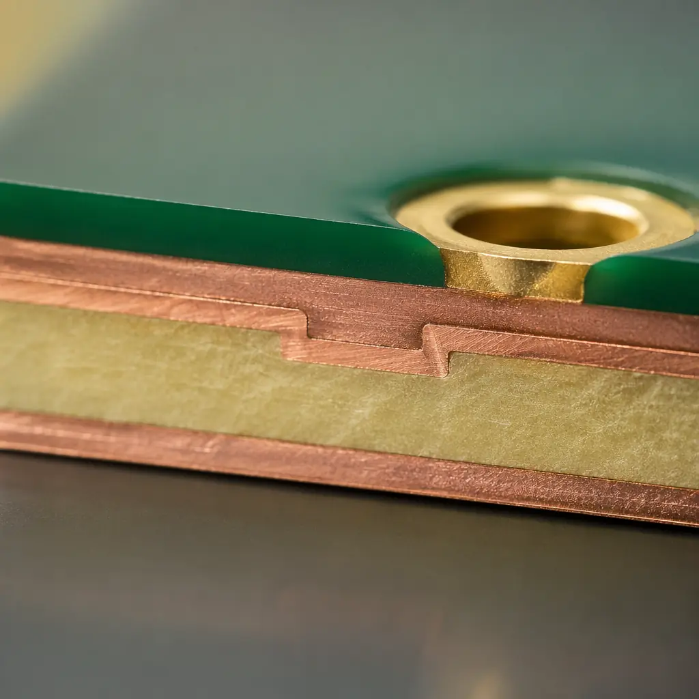
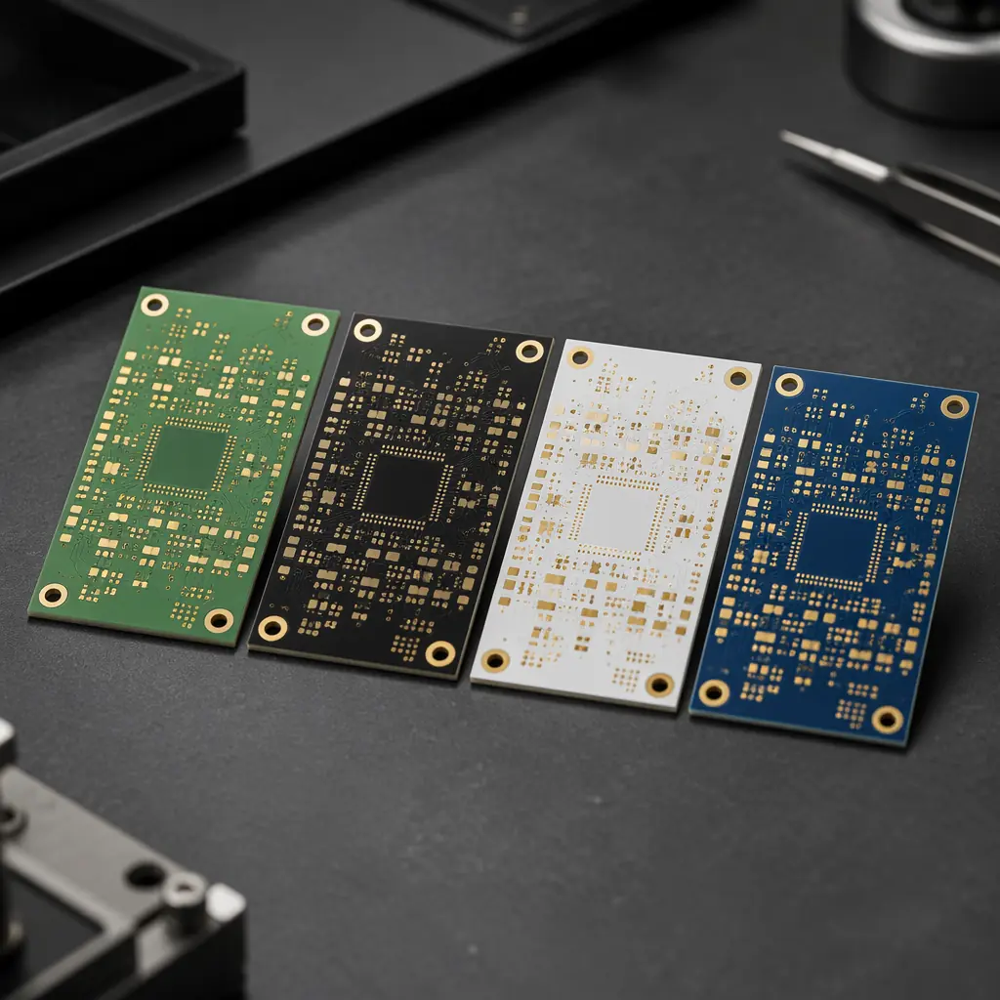
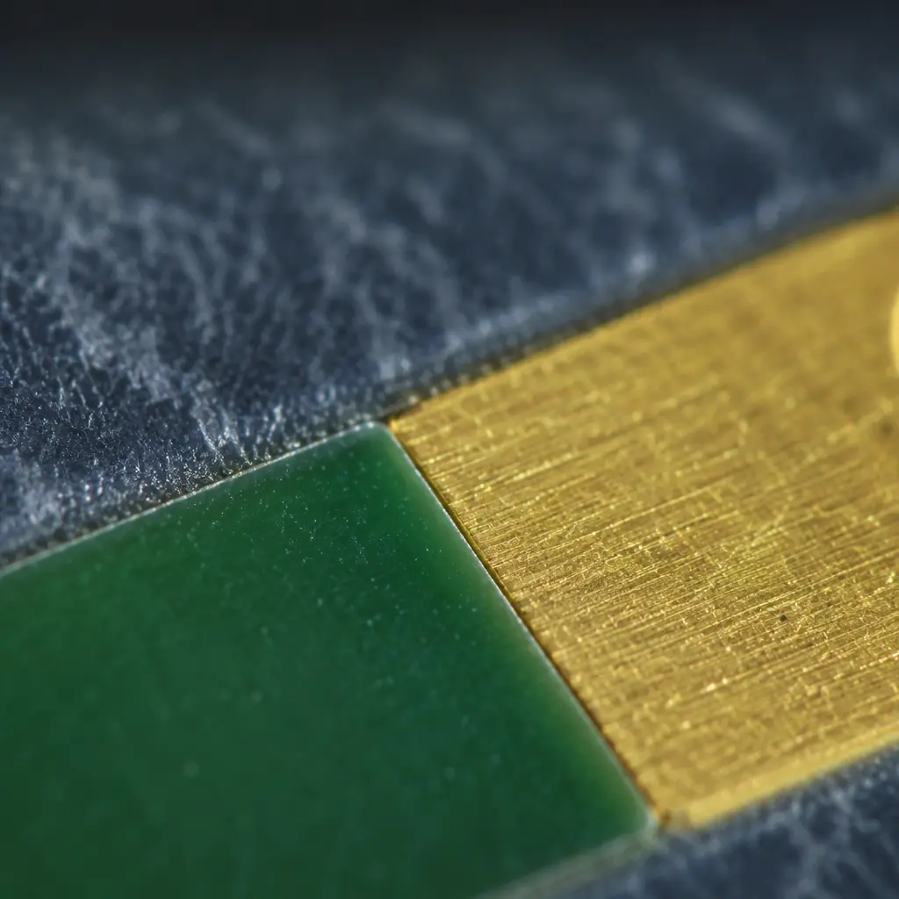

Most PCB buyers treat solder mask as an afterthought — pick green and move on. But when a German automotive Tier-1 rejected an entire batch because the solder mask peeled at 1,500 thermal cycles, the root cause wasn't the PCB material or the assembly process. It was the wrong solder mask chemistry for the application. Solder mask does three jobs: it prevents solder bridges during assembly, protects copper traces from oxidation and environmental damage, and provides the dielectric insulation between adjacent conductors. Get it wrong and you get field returns — not at assembly, but 6-18 months into the product's service life.
At Huaxing PCBA, we process over 120,000 PCB panels per month across 8 SMT lines, running every solder mask type daily — from standard green LPI on consumer IoT boards to matte black dry film on medical devices and UV-curable white for high-reflectance LED arrays. This guide draws from production floor data, not datasheet theory. We'll cover the three chemistries, their resolution limits, which one survives which environment, and exactly what to write in your fabrication notes so your CM doesn't guess.

The Three Solder Mask Chemistries — What They Are and How They're Applied
Every PCB solder mask falls into one of three chemical families. Each has a fundamentally different application process, resolution capability, and cost structure. Understanding these differences before you write your fabrication notes prevents your CM from defaulting to whatever they have in the tank that day.
LPI (Liquid Photoimageable) Solder Mask — The Industry Workhorse
LPI accounts for roughly 85% of all PCB solder mask applications. It's a liquid epoxy-based ink applied by curtain coating or spray, then photoimaged to define pad openings, and thermally cured. The defining capability: 50µm (2 mil) minimum solder dam width — the narrowest web of mask between two adjacent pads that won't break down. For a 0.5mm-pitch QFP with 0.25mm pad-to-pad spacing, LPI leaves a comfortable 75µm dam. Drop to 0.4mm-pitch BGA and that shrinks to 35µm — pushing LPI to its limit. Resolution degrades below 50µm, especially on boards thicker than 1.6mm where spray coating creates uneven thickness at the edges. LPI is available in green, blue, red, black, white, yellow, and matte variants. Our production floor runs 18-22µm cured thickness with ±3µm tolerance across the panel — critical because thickness variation over 5µm changes the dielectric breakdown voltage between adjacent traces. See our IPC Class 2 vs Class 3 comparison for how solder mask requirements tighten across quality tiers.
Dry Film Solder Mask — Vacuum-Laminated for Maximum Control
Dry film is a solid photopolymer sheet vacuum-laminated onto the PCB surface, exposed, developed, and thermally cured. Because it goes on as a solid sheet, thickness is inherently uniform — typically 25-40µm across the entire panel with <1µm variation. That uniformity makes it the go-to choice for fine-pitch applications where LPI's spray-coating thickness variation creates weak spots. Dry film achieves 30-40µm minimum solder dam width — 30-40% finer resolution than LPI. The tradeoffs: it's roughly 1.5-2× the material cost of LPI, the vacuum lamination step adds 4-6 hours to the process, and the higher curing temperature (150°C vs LPI's 130-140°C) can stress high-Tg substrates. It also has a limited color palette — primarily green and black. Dry film dominates in aerospace avionics, military-grade RF boards, and medical implant electronics where a single solder bridge means product recall. For more on the materials that pair with dry film, read our PCB materials selection guide covering Rogers, high-Tg FR-4, and polyimide substrates.
UV-Curable Solder Mask Ink — Fast, Hard, and High-Reflectance
UV-curable ink cures in seconds under UV light rather than the 30-60 minute thermal bake that LPI and dry film require. This makes it the fastest option in production — roughly 3-5× faster throughput than LPI curing. UV inks cure to a harder, more brittle finish than epoxy-based LPI, which is both a strength and a weakness: hardness above 9H pencil provides excellent scratch resistance, but the brittleness means it can micro-crack under repeated thermal cycling (beyond ~500 cycles between -40°C and +125°C). UV ink's standout application is white solder mask for LED PCBs, where it achieves >90% reflectance at 450-470nm — the blue wavelength band that dominates white LED emission. Standard green LPI manages only 50-60% reflectance in that range, meaning more photons get absorbed as heat rather than emitted as light. UV ink also excels in quick-turn prototyping where the fast curing eliminates a production bottleneck. At our facility, UV-curable white goes onto every aluminum MCPCB for LED lighting, while UV green occasionally serves consumer electronics where time-to-market trumps all other factors. The brittleness limitation means we never specify UV ink for automotive or industrial boards that will see wide temperature swings — for those, see our automotive PCB requirements guide covering thermal cycling validation per AEC-Q100.
Procurement Takeaway: If your Gerber notes don't specify solder mask type, your CM defaults to green LPI — which works fine for 90% of boards. But if you're pushing below 0.5mm pitch, operating above 105°C continuous, or requiring >85% white reflectance, you need to override that default. Write the type explicitly in your fabrication drawing.
LPI vs Dry Film vs UV Ink — Head-to-Head on the Criteria That Matter
The following table distills the three chemistries across the seven parameters that actually drive field reliability and procurement cost. These numbers come from our in-house qualification data across 8 SMT lines, not vendor datasheets.
| Parameter | LPI (Epoxy) | Dry Film | UV-Curable Ink |
|---|---|---|---|
| Min. Solder Dam Width | 50-75µm | 30-40µm | 60-80µm |
| Cured Thickness | 15-25µm | 25-40µm | 10-20µm |
| Thickness Uniformity | ±3-5µm | <1µm | ±4-8µm |
| Chemical Resistance | Good (ENIG/OSP compatible) | Excellent (all finishes) | Moderate (avoid strong flux) |
| Thermal Cycle Endurance | 1,500+ cycles (-40/+125°C) | 2,000+ cycles | ~500 cycles (micro-cracking) |
| White Reflectance (450-470nm) | 50-60% | 55-65% | >90% |
| Material Cost (relative) | 1× (baseline) | 1.5-2× | 0.7-0.9× |
| Process Time (curing) | 30-60 min | 45-75 min | 5-15 seconds |
| IPC-SM-840 Class | Class T (standard) | Class H (high reliability) | Class T (standard) |
| Best For | General-purpose, 0.5mm+ pitch | Fine-pitch, mil/aero, medical | LED, quick-turn, consumer |
Solder Mask Color — More Than Aesthetics
PCB buyers often treat solder mask color as a branding decision. But color directly affects inspection contrast, rework visibility, and in the case of white, thermal performance. Here's what each color means on the production floor.
Green — Highest AOI Contrast, Lowest Defect Escape Rate
Green isn't the default because it's cheap. It's the default because Automated Optical Inspection (AOI) cameras achieve their highest contrast against green backgrounds — the algorithms are tuned around the green-magenta channel separation that makes copper traces pop. Our AOI machines detect >99.7% of solder defects on green mask vs ~98.5% on black. For high-reliability boards where every joint gets optically inspected, green remains the safest choice. Matte green — increasingly popular for its premium look — achieves the same contrast as glossy while eliminating glare under angled inspection lighting.
Black — Premium Look, Tougher Inspection
Black solder mask dominates consumer electronics (smart home devices, wearables, drone controllers) where visible PCBs need to look premium. The tradeoff is on the production line: black absorbs inspection light, reducing contrast and making rework harder because overheated pads are harder to spot against a dark background. Black also absorbs more IR during reflow — we compensate by reducing peak reflow temperature by 2-3°C to avoid scorching. Matte black is particularly unforgiving: fingerprint oils and flux residue show up as visible smudges, requiring an extra cleaning step before shipment. For buyers ordering black mask: expect a 5-8% longer inspection time and a slightly higher rework scrap rate versus green. See our consumer electronics PCB guide for more production considerations.
White — Only When Reflectance Matters
White solder mask exists primarily for LED applications where every reflected photon improves lumen output. UV-curable white achieves >90% reflectance, directly increasing LED board efficiency by 5-15% versus green. But white has a major production downside: it yellows under repeated reflow. After 3 reflow cycles (typical for double-sided SMT + rework), white LPI shifts from 90% to ~80% reflectance. UV-curable white holds up better, degrading only 3-5% over 3 cycles. Our recommendation: only specify white for LED lighting, LED displays, and optical sensor boards where reflectance is functional. For any other application, the inspection difficulty and yellowing risk outweigh the aesthetic benefit.
Blue, Red, Yellow — Niche Applications
Blue and red solder mask serve specific engineering needs: blue for high-voltage isolation boards (the color contrast helps technicians identify keep-out zones visually), red for prototyping and development boards where easy visual identification of different board revisions matters. Yellow is occasionally used on flex PCBs where the translucent quality helps inspection of embedded traces. These colors add zero functional benefit for standard production PCBs and may carry a 10-15% price premium due to smaller batch volumes at the ink supplier. Unless your application specifically requires one of these colors for functional reasons, skip them.

Which Solder Mask for Which Application — Decision Matrix
Here's how our engineering team routes every incoming order based on the application — distilled into a decision matrix you can apply to your own BOM.
| Application | Recommended Type | Recommended Color | Key Reason |
|---|---|---|---|
| Consumer IoT / Smart Home | LPI | Matte Black | Visible PCB needs premium finish; 0.5mm+ pitch is standard |
| Automotive (Under-Hood) | LPI (High-Tg) | Green | 1,500+ thermal cycles; AOI contrast matters for safety-critical |
| Medical Implantable | Dry Film | Green | Zero-tolerance bridging; uniform thickness for dielectric reliability |
| Industrial Control (PLC/VFD) | LPI | Green | Chemical resistance to shop-floor contaminants; cost-sensitive volume |
| LED Lighting / Display | UV-Curable | White | >90% reflectance at 450-470nm directly improves lumen/W |
| Aerospace / Defense | Dry Film | Green | IPC-SM-840 Class H; 30µm dam on fine-pitch RF; vacuum lamination uniformity |
| Quick-Turn Prototype | UV-Curable | Green | Curing in seconds eliminates the thermal bake bottleneck |
| 0.4mm-Pitch BGA / HDI | Dry Film | Green | 30µm dam is mandatory — LPI's 50µm minimum won't hold |
What to Write in Your Fabrication Notes — A 7-Point Specification Checklist
Most Gerber packages arrive at the CM with no solder mask specification. The CAM engineer defaults to green LPI. If that's not what you need, here's exactly what to add to your fabrication drawing or readme.txt:
Solder Mask Type: [LPI / Dry Film / UV-Curable]
Write the chemistry explicitly. Example: "Solder mask: LPI (liquid photoimageable epoxy)." Don't just write "green solder mask" — that leaves the chemistry ambiguous and the CM picks whatever green they have loaded.
Color: [Green / Matte Green / Black / White / Blue / Red]
Specify gloss level if it matters. Matte finishes look premium but add a cleaning step. Glossy has better AOI contrast. For white, specify reflectance target: "White solder mask, >85% reflectance at 450-470nm per spectrophotometer measurement."
IPC-SM-840 Class: [T (Standard) / H (High Reliability)]
Class T covers standard consumer/industrial. Class H is mandatory for automotive, medical, aerospace, and military — it adds 500-hour humidity aging, higher thermal shock cycles, and stricter adhesion testing. If you're building to IPC Class 3 for assembly, use Class H solder mask. See our IPC Class 2 vs Class 3 comparison for how these standards interact.
Minimum Solder Dam: [Value in µm or mil]
Derive this from your smallest pad-to-pad spacing minus the solder mask expansion. For a 0.5mm-pitch QFP with 0.25mm pad-to-pad and 0.075mm expansion per side, you need at minimum 100µm dam. Write it: "Minimum solder dam: 100µm (4 mil)." The CAM engineer will flag it if their process can't hold that number — better to find out before production than after.
Solder Mask Expansion: [Value in µm or mil]
This is the clearance between the copper pad edge and the solder mask opening. Standard expansion is 50-75µm (2-3 mil) for LPI. Tighten to 25-40µm (1-1.5 mil) for dry film on fine-pitch. Expansion that's too large exposes bare copper, risking oxidation; too small and the mask encroaches on the pad, reducing solderable area. Write it per side: "Solder mask expansion: 50µm per side."
Surface Finish Compatibility
Some solder mask / surface finish combinations have known issues. LPI is compatible with all common finishes (ENIG, HASL, OSP, immersion silver, immersion tin). Dry film may require plasma treatment before ENIG to ensure adhesion on the mask-to-gold interface. UV-curable white can react with aggressive flux residues from no-clean solder paste, causing discoloration. If your board uses a niche finish, verify compatibility with the CM before locking in the mask type. Read our ENIG vs HASL surface finish guide for more on finish-mask interactions.
Via Tenting: [Yes / No / Plugged]
Via tenting — covering the via annular ring with solder mask — is standard for most boards and should be explicitly stated. Untented vias are only needed when you plan to use them as test points. Via plugging (filling the via hole completely with mask or epoxy) is required for via-in-pad designs to prevent solder wicking into the via during reflow. Write it clearly: "All vias tented, 25µm minimum mask over annular ring" or "Vias in BGA pads to be epoxy-filled and planarized."
Cost Impact: Specifying dry film instead of LPI adds roughly 15-25% to the bare PCB cost for a standard 4-layer board. That's ~$0.30-0.50 per board at 1,000-unit volume — negligible for a medical device selling at $5,000 per unit, material for a consumer product at $12 BOM cost. Match your specification to your application tier. For more on cost structure, see our PCB cost factors guide.
3 Solder Mask Defects Your Incoming Inspection Should Catch
Even with correct specification, process variation creates defects. Here are the three failure modes that escape in-process AOI and reach your receiving dock — and how to catch them before they reach your SMT line.
Mask Registration Shift
When the solder mask image doesn't align with the copper pattern, mask encroaches onto pads — reducing the solderable area and causing insufficient solder joints. Look for it on corner pads where registration error is greatest (the further from the panel center, the larger the shift). Acceptable registration tolerance for IPC Class 2: 75µm maximum shift. For Class 3: 50µm. Check with a microscope at 20× on at least 20 pads across the panel diagonal.
Undercure / Overcure
Undercured solder mask is soft and tacky — it'll delaminate during wave soldering, leaving mask fragments in the solder pot that contaminate subsequent boards. Overcured mask becomes brittle and develops hairline cracks along pad edges after the first reflow cycle. The standard test: a solvent rub test with isopropyl alcohol — 50 rubs with moderate pressure should not remove the mask or transfer color to the swab. If it does, the mask is undercured and the entire batch should be rejected.
Mask Flaking at Board Edge / Scoring Line
When panels are depanelized by V-scoring or routing, mechanical stress can cause the solder mask to flake off within 1-2mm of the board edge. This exposes copper to oxidation and creates a short-circuit risk if the flaking propagates under BGA or QFP packages. Inspection: after depanelization, inspect all four board edges under 10× magnification. Any flaking beyond 1.0mm from the edge is a reject per IPC-A-600 Class 2. If flaking is recurring, ask your CM to switch to a slower router feed rate or a lower-pressure V-score blade — the root cause is mechanical rather than chemical.

Specify It Once, Ship It Right
Solder mask may be the least glamorous layer in your PCB stackup, but it's the one that fails most visibly when specified wrong. The three chemistries — LPI, dry film, UV ink — each solve a different problem. LPI is the safe default for boards above 0.5mm pitch. Dry film is the engineering answer when a 30µm solder dam means the difference between passing and failing functional test. UV ink is the throughput play when every hour of curing time matters.
The difference between a board that runs for 5 years and one that fails at month 8 often traces back to a 50µm mask spec that should have been 30µm — written in the fabrication notes or guessed by the CAM engineer. Write it explicitly. At Huaxing PCBA, our engineering team reviews every incoming Gerber package against these seven specification points before releasing to production. We've caught 47 under-specified solder mask requirements in the last quarter alone — each one would have produced boards that looked right but failed in the field.
Ready to specify your solder mask with confidence? Upload your Gerber files for a 24-hour quote with free DFM review, or contact our engineering team to discuss your specific application requirements.